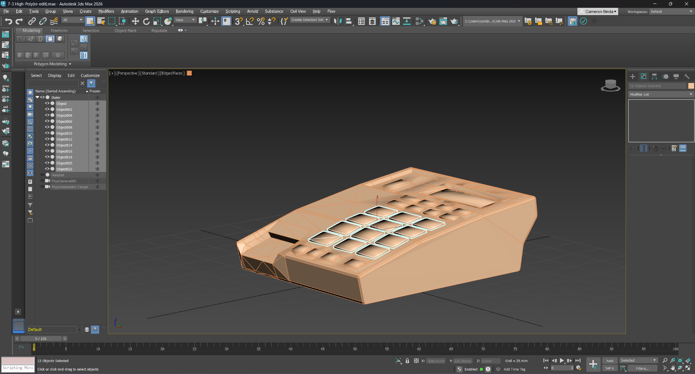
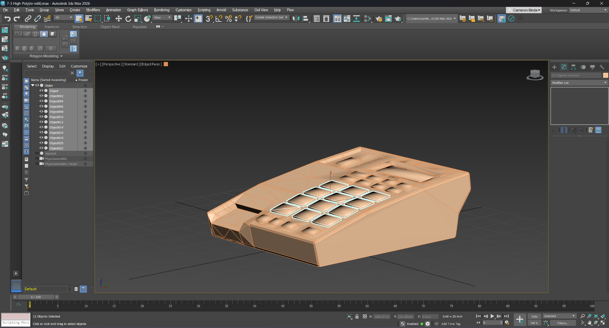

Spool Holder
Details
This is a spool holder I designed specifically so I wouldn't have to buy an Automatic Material System for my Bambu Lab printer. The spool holder can hold up to 1KG spools for 1.75mm filament. The spool holders are designed with hooks so that they can connect to each other in multiple ways. Technically, this could be used for many things. The model was made in Autodesk Fusion, but I have not printed it due to the high cost and the lack of actual need. I will upload it to MakerWorld once I confirm that it prints correctly and is strong enough for 1KG spools.
Retro Handheld
Details
This was pretty complex for one of my first projects in Autodesk Fusion. I've seen those cheap emulation machines online for a while, and once I got a 3D printer, I had to make my own out of an old phone and controller I have. I decided to design these 3D models in Fusion around these parts and I've gotten great results so far. The controller circuit board is from a cheap, generic controller, and the phone is a Galaxy S5 with custom firmware. The project is still not complete, since I found the the hinge to be the hardest part. The files will be uploaded to MakerWorld once it's done just for easy viewing.
Portable Container
Details
This is a portable container I designed to be used for anything. It's an extremely simple model that I made in Autodesk Fusion. There are 2 parts that are printed and connected with just a piece of 1.75mm 3D printing filament. The container holds itself closed due to a low tolerance in between the 2 printed parts. I may adapt this for a print-in-place design. The source file will not be available, but the model is available for download here, at MakerWorld so that anyone can preview and 3D print it.
Phone Model and Animation
Details
This is a phone model and animation I made for a college course. It was made at the beginning of my college career in 3DS Max. It was then refined and polished for the capstone course of my degree. During the capstone, I also decided it was necessary to be able to import it into a game engine. I found that it was very simple to export and import the project into Unreal Engine. I also used ffmpeg to convert the image sequence to a video. I then used it to convert the video to a GIF for this website. The source files are available here, and all files can be downloaded under Releases on the right.
Reflection
I learned how to model with reference images. I was able to take 2D shapes and create a 3D model. I also learned how to use 3DS Max more efficiently. There are, like other professional software, many shortcuts to save time. I also learned how to import assets into Unreal. I discovered that many softwares can export to .fbx files, and Unreal can import those files. There's also lots of settings to make sure you only import what you need.
The main challenge I faced was cleaning up the model. I needed to get rid of a lot of unnecessary vertices, but I couldn't find an easy way to do that. I decided to manually remove the vertices, and add back some edges to make the faces transition more smoothly. Finally, I learned how to use ffmpeg to convert between image and video file types. I went from an image sequence to a video, and then from a video to a GIF to avoid embedding the video.
The model's main improvement was its animation. It's now much more detailed, and includes movement on the phone buttons. Any button can move, but I have it type 911. The models were also slightly improved. Like I said, I removed a ton of vertices, and the handset now has speaker and microphone holes. I also changed the smoothing on the model.
Examples

 
